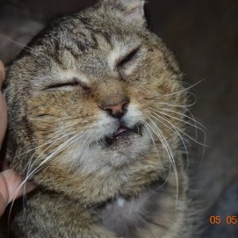

NELLO VOELT ZICH VÉÉL BETER
bericht bijgewerkt op 04.05.2020
Update 25/05/2020:
Nello stelt het prima! Zijn gezondheid gaat er dag na dag op vooruit nu zijn tanden getrokken zijn en die pijn weg is.
Gezien de ingreep aanzienlijk was, was het niet de goedkoopste jongen maar zoals je weet is bij Het dierenthuisje het welzijn van de dieren van opperste belang. Natuurlijk weet iedereen dat het niet evident is in een periode waarin geen evenementen kunnen georganiseerd worden om die centen die zo hard nodig zijn, bijeen te krijgen. Nu blijkt dat de openthuisdagen dit jaar ook niet zullen kunnen doorgaan, moeten we andere registers open trekken. Vandaar de online “rommelmarkt”en daarop nu ook een onderdeel “veiling“, specifiek ten voordele van Nello.
Wil je meter of peter worden over Nello?
Update 20/05/2020
Vandaag was het zover: de uitgestelde tandverzorging is gebeurd. Toen hij aankwam was hij te zwak en was de infectie te erg om grondig te opereren aan de tanden. Ondertussen had Nello antibiotica en ontstekingsremmers gekregen waardoor hij gedeeltelijk opgekrikt was. We hopen dat hij na de ingreep helemaal kan recupereren en zonder medicatie verder kan. Zijn mond was immers een serieuze infectiebron die vermoedelijk al chronisch geworden was.
Resultaat is dat hij ocharme nog twee tandjes overhoudt. Toch zal het een verademing zijn want door die tandontstekingen, waren gans zijn luchtwegen ontstoken. Of we Nello nog een eigen thuis zullen kunnen gunnen, zal de toekomst moeten uitwijzen. We hopen wel dat hij de steun van meters en peters mag krijgen want deze jongen gaat nog wel wat zorgen vragen. We starten sowieso aangepaste medicatie op omwille van zijn FIV. De operatie bedroeg 485€ doordat er heel wat wortels en andere restanten moesten verwijderd worden wat microscopisch werk is.
Onlangs kregen we een prachtig olieschilderijtje om te verkopen per opbod voor een dier dat het nodig heeft. Wel we denken dat dit wel de moment is! Biedingen kunnen via mail of via Facebook/Instagram. We starten op 50€: wie biedt meer?! We sluiten de veiling af op maandag 25/5 om 18u!
Origineel olieschilderijtje, gesigneerd: IKochuyt, grootte ingekaderd: 25cmx25cm
Bij ons sinds 30/04/2020
Nello was een zwerver die dringend verzorging nodig had bij aankomst. Zijn mond was volledig ontstoken en verschillende tanden moesten direct getrokken worden. Hij zat ook onder de vlooien en teken. Daar bovenop was zijn vacht volledig geklit en waren zijn oogjes ontstoken. Geschoren kwam hij toe nadat de dierenarts hem de eerste dringende zorgen had toegediend. Verdere zorgen werden gepland voor een tweetal weken later zodat hij eerst kan bekomen. Deze lieverd was ó zo blij met een warm plekje binnen!
Gezien zijn toestand werd bloed genomen om te kijken of er soms onderliggende oorzaken zijn voor zijn toestand. Helaas werd hij FIV positief getest. Toch herstelt Nello goed dankzij de medicatie die hij nu krijgt en we hopen dat we hem weer helemaal gezond kunnen krijgen zodat hij nog lang mag genieten. Hij wordt geschat op een jaar of 10 à 12 dus heeft hij nog kans op heel wat mooie jaren. Dit is nu zo’n schat van een mensenvriend die we dolgraag nog een eigen plekje zouden geven in een gezin. Hij heeft er echt nood aan na zijn trieste zwerversbestaan waar hij niet voor gekozen heeft!
Wie Nello die kans wil schenken, mag alvast contact met ons opnemen. In de week van 11 Mei zou hij nog verdere tandverzorging krijgen. Wie deze lieverd wil steunen door zijn meter/peter te worden, wordt met open pootjes onthaald!
De eerste foto is genomen bij aankomst, de andere foto’s dateren van vijf dagen later; wat verzorging en liefde kan doen hé!